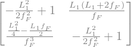
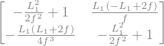
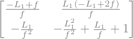
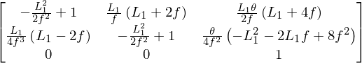
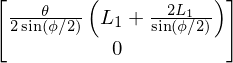
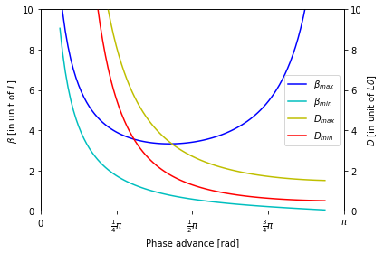

9. Case Study: FODO Cell#
We will use FODO cell, with thin length Quadrupoles and small angle approximation for dipoles to illustrate various concepts of transverse dynamics.
Show code cell source
import matplotlib.pyplot as plt
%matplotlib ipympl
import numpy as np
import sympy
sympy.init_printing(use_unicode=True)
plt.rcParams.update({'font.size': 16})
---------------------------------------------------------------------------
ModuleNotFoundError Traceback (most recent call last)
Cell In[1], line 1
----> 1 import matplotlib.pyplot as plt
2 get_ipython().run_line_magic('matplotlib', 'ipympl')
3 import numpy as np
ModuleNotFoundError: No module named 'matplotlib'
9.1. Transfer Matrix of FODO cell#
FODO cell is a type of widely used cell of magnets. It consist of only two quadrupoles and two dipoles or simply drifts between quads. To make a symmetric cell, we use the following sequence:
We use the following approximation:
Small bending angle approximation: the transfer matrix for a dipole reduces to a drift space, the space between quads are same, which is \(L_1\)
Short quadrupole approximation, so that the quad can be modeled by its focusing length \(f\)
Focusing length and defocusing length are same.
Then the matrix is
Show code cell source
l,f,ff,fd,a=sympy.symbols(r"L_1,f,f_F,f_D,\alpha")
def mat_q(f):
return sympy.Matrix([[1,0],[1/f,1]])
def mat_d(d):
return sympy.Matrix([[1,d],[0,1]])
mat_fodo=sympy.simplify(mat_q(-2*ff)*mat_d(l)*mat_q(fd)*mat_d(l)*mat_q(-2*ff))
mat_fodo.subs(fd, ff)

The transfer matrix to/from the mid-point of the focusing quad is
The determinant of the matrix is always 1. The trace of the FODO cell is \(2- \frac{L_{1}^{2}}{ f^{2}} \).
The starting point can be choose arbitrarily. If we use the midpoint of the defocusing quad:
Show code cell source
mat_fodo_2=sympy.simplify(mat_q(2*f)*mat_d(l)*mat_q(-f)*mat_d(l)*mat_q(2*f))
mat_fodo_2

The transfer matrix becomes:
The trace remain unchanged.
Show code cell source
mat_fodo_3=sympy.simplify(mat_d(0)*mat_q(f)*mat_d(l)*mat_q(-f)*mat_d(l))
mat_fodo_3

If we set the starting point right after the focusing quadrupole, the matrix becomes
Again the trace remain unchanged. That is a natural result since trace of the product of matrices is an invariant under cyclic permutation.
9.2. FODO cell in repeating structure#
To use the FODO cell many time in a repeating structure, the trace has to be larger than \(-2\). Therefore:
which reduces to:
Then we can get the optics parameters of the one-turn matrix:
Then the betatron phase advance can be calculated from:
or
The trace is an invariant under changing the starting piont, so does the phase advance.
The optical function can be calculated at different locations by:
At the middle point of the QD or QF we have:
Right after the focusing quad, we have:
9.3. Dispersion in FODO cells#
Let’s consider the FODO cells with small bending angle approximation, starting from the mid point of the focusing quad. The extended \(3\times 3\) matrix \(\mathcal{M}\) gives
Show code cell source
t=sympy.symbols("\\theta")
def matd_q(f):
return sympy.Matrix([[1,0,0],[1/f,1,0],[0,0,1]])
def matd_d(d, ang):
return sympy.Matrix([[1,d,d*ang/2],[0,1,ang],[0,0,1]])
mat_fodo=sympy.simplify(matd_q(-2*f)*matd_d(l,t)*matd_q(f)*matd_d(l,t)*matd_q(-2*f))
mat_fodo

The matrix \(\mathcal{M}\) of FODO cell gives
Show code cell source
s=sympy.symbols('\sin(\phi/2)')
sympy.simplify(sympy.Inverse(sympy.eye(2)-mat_fodo[:2,:2])*mat_fodo[:2,2]).subs(f, l/2/s)

The dispersion function in periodical boundary condition gives:
One can easily get the dispersion function at the middle point of the defocusing quad as:
With the choice of the phase advance, the maximum and minimum of the beta function and dispersion functions can be optimized base on the requirements.
Show code cell source
epsilon=0.2
phi=np.linspace(epsilon,np.pi-epsilon,100)
beta_max=2*(1+np.sin(phi/2))/np.sin(phi)
eta_max=(np.sin(phi/2)+2)/2/np.sin(phi/2)/np.sin(phi/2)
beta_min=2*(1-np.sin(phi/2))/np.sin(phi)
eta_min=(-np.sin(phi/2)+2)/2/np.sin(phi/2)/np.sin(phi/2)
fig,ax=plt.subplots()
ax_m=ax.twinx()
ax.set_xlabel("Phase advance [rad]")
ax.set_ylabel(r"$\beta$ [in unit of $L$]")
ax_m.set_ylabel(r"$D$ [in unit of $L\theta$]")
ax.set_ylim(0,10)
ax.set_xlim(0,np.pi)
ax_m.set_ylim(-0,10)
l1=ax.plot(phi,beta_max,c='b',label=r'$\beta_{max}$')
l2=ax.plot(phi,beta_min,c='c',label=r'$\beta_{min}$')
l3=ax_m.plot(phi,eta_max, c='y', label=r'$D_{max}$')
l4=ax_m.plot(phi,eta_min, c='r', label=r'$D_{min}$')
lns = l1+l2+l3+l4
labs = [l.get_label() for l in lns]
ax.legend(lns,labs,loc='right')
ax.set_xticks(np.linspace(0,1,5,)*np.pi)
ax.set_xticklabels(["$0$", r"$\frac{1}{4}\pi$", r"$\frac{1}{2}\pi$",
r"$\frac{3}{4}\pi$", r"$\pi$",
])
fig.tight_layout()

9.4. Chromaticity of FODO cell#
The natural chromaticity of this lattice has contributions from the two thin quadrupoles
9.5. \(\mathcal{H}\) function in FODO cell#
We have optics at the middle of QF and QD
Therefore the \(\mathcal{H}\) at these two location gives:
Let’s replace the integral with the average of the value at both end of the dipole.
The maxmumum, minimum \(\mathcal{H}\) function and the approximated \(\mathcal{H}\) in dipoles are also functions of the phase advance of the FODO cell.
Show code cell source
epsilon=0.2
phi=np.linspace(epsilon,np.pi-epsilon,100)
beta_max=2*(1+np.sin(phi/2))/np.sin(phi)
eta_max=(np.sin(phi/2)+2)/2/np.sin(phi/2)/np.sin(phi/2)
beta_min=2*(1-np.sin(phi/2))/np.sin(phi)
eta_min=(np.sin(phi/2)-2)/2/np.sin(phi/2)/np.sin(phi/2)
H_min=eta_max*eta_max/beta_max
H_max=eta_min*eta_min/beta_min
loc=np.argmin(H_max+H_min)
print(phi[loc]/np.pi*180, (H_max+H_min)[loc]/2)
chrom=-np.tan(phi/2.0)/(phi/2.0)
fig,ax=plt.subplots()
ax_m=ax.twinx()
ax.set_xlabel("Phase advance [rad]")
ax.set_ylabel(r"$\mathcal{H}$ in unit of $\rho \theta^3$")
ax_m.set_ylabel(r"Specific chromaticity $\xi/\nu$")
ax.set_ylim(0,10)
ax.set_xlim(0,np.pi)
#ax_m.set_ylim(-10,10)
l1=ax.plot(phi,(H_max+H_min)/2.0, c='b', label=r'Average $\mathcal{H}$')
l2=ax.plot(phi,H_max,c='y',label=r'$\mathcal{H}_{max}$', alpha=0.4)
l3=ax.plot(phi,H_min,c='c',label=r'$\mathcal{H}_{min}$', alpha=0.4)
l4=ax_m.plot(phi,chrom, c='r', label=r'Chromaticity $\xi$')
lns = l1+l2+l3+l4
labs = [l.get_label() for l in lns]
ax.legend(lns,labs,loc=3)
ax.set_xticks(np.linspace(0,1,5,)*np.pi)
ax.set_xticklabels(["$0$", r"$\frac{1}{4}\pi$", r"$\frac{1}{2}\pi$",
r"$\frac{3}{4}\pi$", r"$\pi$",
])
ax.axvline(x=phi[loc], ls='--', lw=.5)
labs = [l.get_label() for l in lns]
ax.legend(lns,labs,loc=3)
fig.tight_layout()
138.39385343374136 1.18777034003462